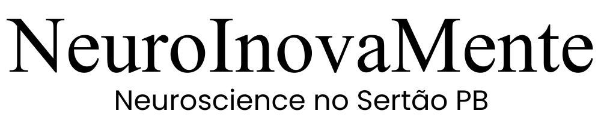

Crianças com dificuldade de atenção
Atendimento com foco no fortalecimento cognitivo e na organização mental.
Desenvolvemos funções executivas, raciocínio, autonomia e inteligência emocional desde a primeira infância.

Funções executivas e desenvolvimento cognitivo global
Aprender, planejar, organizar e tomar decisões
A NeuroInovaMente é um Centro de Desenvolvimento Cognitivo Global que fortalece as estruturas mentais responsáveis por aprender, planejar, organizar e tomar decisões.
Não é reforço escolar. Não é escola tradicional. É uma Academia do Cérebro.
Atendimento com foco no fortalecimento cognitivo e na organização mental.
Desenvolvimento de rotina, planejamento, estrutura e autonomia.
Potencialização das habilidades com direcionamento prático.
Estratégias cognitivas para responsabilidade, decisão e independência.
Um ambiente que vai além do currículo tradicional e amplia competências para a vida.
Cada programa inclui: objetivo, benefícios e faixa etária.
Cada programa inclui: objetivo, benefícios e faixa etária.
Cada programa inclui: objetivo, benefícios e faixa etária.
Cada programa inclui: objetivo, benefícios e faixa etária.
Cada programa inclui: objetivo, benefícios e faixa etária.
A metodologia da NeuroInovaMente integra educação, neurociências e desenvolvimento da linguagem, com foco no fortalecimento das funções executivas.
Trabalhamos especialmente planejamento, controle inibitório, memória de trabalho e flexibilidade cognitiva.
A NeuroInovaMente nasceu da visão de Josemary Palmeira da Costa, especialista em desenvolvimento cognitivo, a partir da necessidade de criar um espaço estruturado que fortalecesse o cérebro de forma científica, ativa e integrada.

Fundadora e Diretora Técnico-Científica
Pedagoga • Neuropsicopedagoga • Terapeuta Familiar • Terapeuta Infantil • Psicanalista • Mestranda em Neurociências
Responsável pela concepção metodológica e desenvolvimento científico da Academia do Cérebro.
Sócio e Especialista em Linguagem
Fonoaudiólogo
Responsável pela área de desenvolvimento comunicativo e linguagem, ampliando a atuação interdisciplinar da instituição.
Santa Luzia – PB
Endereço completo em breve.